Scegli il supporto
Spilla, specchietto, portachiavi o magnete. L'eterna lotta tra: moda, vanità, utilità o... beh, frigorifero.
Configura la tua superspilla con l’eleganza di chi sa esattamente cosa sta facendo. Oppure con la meravigliosa energia del caos. Per ogni gadget prenotato è previsto un sostegno di 4 € al momento del ritiro. Così sai già tutto, e poi puoi dedicarti alle decisioni davvero difficili: design, supporto e quantità di glitter.
Spilla, specchietto, portachiavi o magnete. L'eterna lotta tra: moda, vanità, utilità o... beh, frigorifero.
Perle assolute, icone, meme e piccoli capolavori di sfacciataggine visuale.
Una sottile pellicola trasparente o olografica: il design resta visibile, ma con più dramma.
Queste non sono semplicemente spille. Sono un’idea folle, deliziosa e oggettivamente camp. Se sei qui per fare le cose in grande, probabilmente vuoi iniziare da loro.
Il fronte è sempre un bottone bombato da 57 mm. Dietro scegli tu se pungere, riflettere, appenderti alle chiavi o conquistare il frigorifero.
Sfoglia per categoria oppure cerca per nome. Su computer passa sopra un design per vederlo più grande. Sì, anche per giudicarlo meglio.
Il finish è una sottilissima pellicola applicata sopra il design: può essere completamente trasparente oppure avere effetti olografici. In ogni caso il disegno sotto si continua a vedere benissimo. Cambia solo il livello di sfrontatezza. ✨
Questa è un’anteprima indicativa del fronte. Nella vita vera luce, riflessi e finish potrebbero renderla ancora più sfacciata, che è una splendida notizia.
Nel tempo, il progetto ha raccolto apprezzamenti da figure di grande rilievo culturale, artistico, scientifico, mitologico e condominiale. Ne riportiamo una selezione.
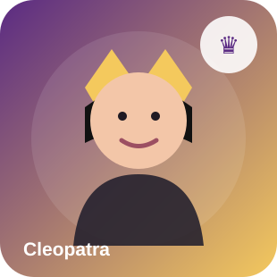
“Ho conosciuto il lusso, il potere e il dramma politico. Ma poche cose hanno la stessa presenza scenica di una finitura Gem ben abbinata.”
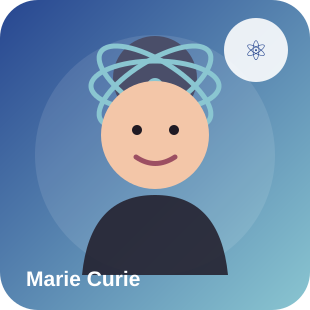
“Brillano in modo convincente. Per una volta, senza conseguenze per la salute.”
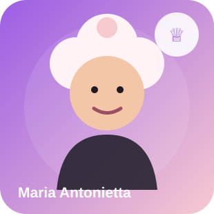
“Se proprio non vogliono una spilla, allora che prendano almeno uno specchietto.”
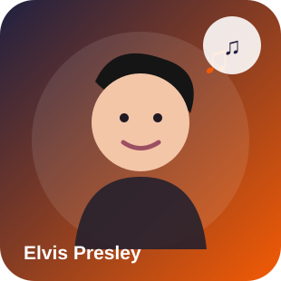
“A little less conversation, a little more portachiavi.”
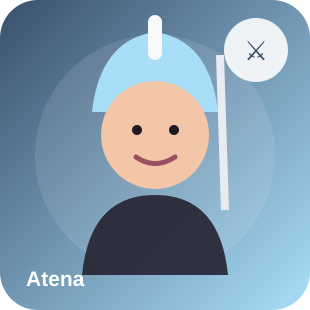
“Finalmente un progetto in cui estetica, strategia e caos controllato convivono in modo esemplare.”
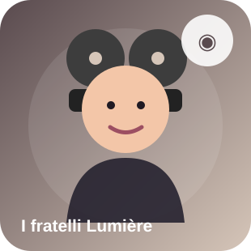
“Pensavamo che l’immagine in movimento fosse il futuro. Poi abbiamo visto le musicali.”
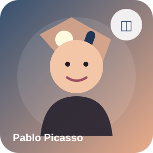
“Avrei potuto farle anch’io così. Ho solo scelto, per carattere, di complicarmi la vita.”
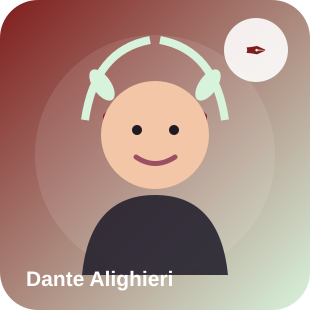
“Nel mezzo del cammin di mia scelta gadget, mi ritrovai davanti a 2304 combinazioni possibili.”
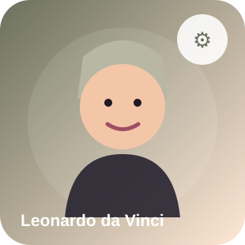
“Idea semplice, esecuzione brillante. È raro vedere una macchina del desiderio funzionare così bene.”
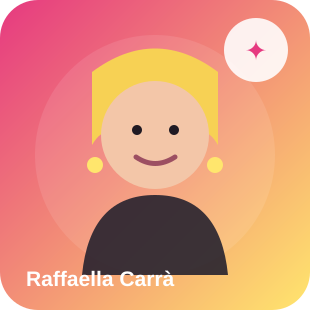
“Molto bene. Allegre, precise, pop. E finalmente nessuno ha avuto paura di esagerare.”
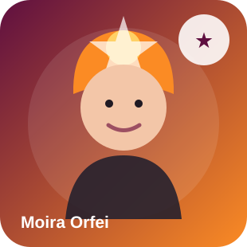
“Finalmente un progetto che non teme il colore, il colpo d’occhio e una certa sana esuberanza.”
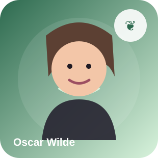
“Ho gusti semplicissimi. Mi accontento sempre del meglio. In questo caso, Big Star.”
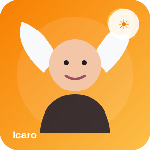
“Sono salito troppo in alto. Loro, invece, hanno trovato la quota giusta.”
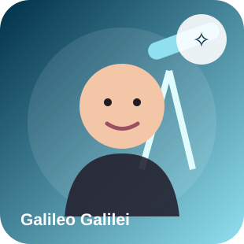
“Eppur luccica. Ho controllato due volte.”
“Non ho ancora capito bene cosa siano. Però c’è del carattere, e questo oggi manca.”
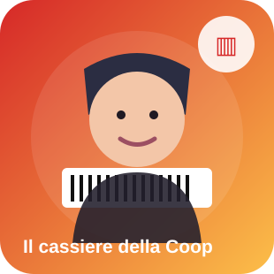
“Sono 4 euro. Ha la tessera?”
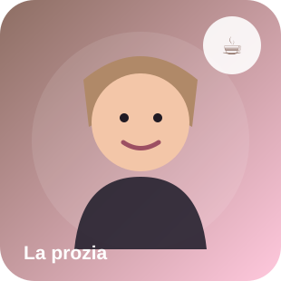
“Io non seguo tutte queste modernità. Però quella col gatto la prenderei.”
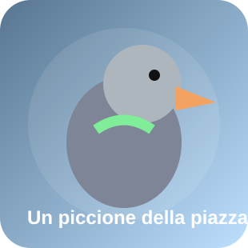
“Le ho osservate da vicino. Ottima visibilità dall’alto.”
Aggiungi, togli, moltiplica. Nessuno qui giudica. Tranne forse alcune spille, ma con affetto.
Non hai ancora creato niente. È una condizione facilmente risolvibile.
Prima di scatenare la produzione, ci servono solo due cose: come vuoi che ti chiamiamo e dove mandarti le mail.
La prenotazione è stata registrata. Adesso manca il passaggio che separa un desiderio da una produzione vera: la seconda conferma via email.
Controlla la posta
Riceverai una mail all’indirizzo indicato.
Premi “Confermo la mia prenotazione”
Finché non lo fai, noi non iniziamo a produrre nulla.
Aspetta il QR
Quando i gadget saranno pronti, arriverà la mail per il ritiro.
Abbiamo registrato la prenotazione SP-0000 per tu@esempio.it.